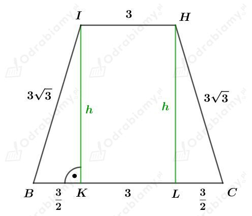
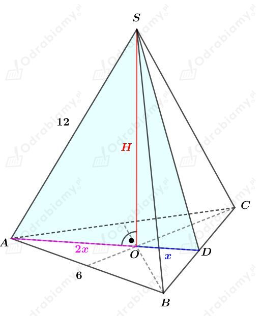
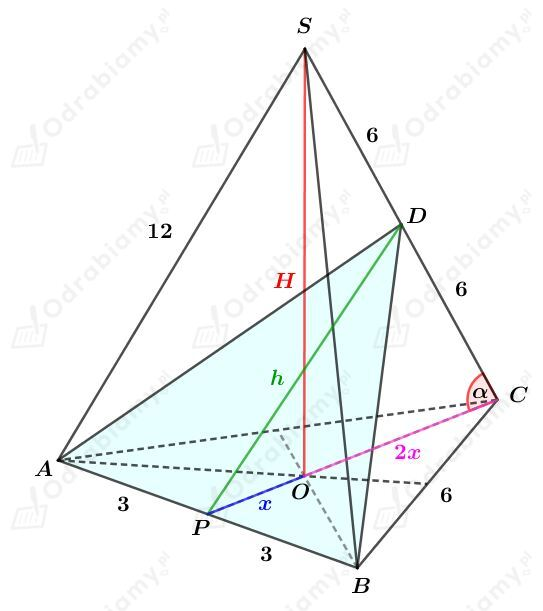

Dany jest ostrosłup prawidłowy czworokątny, którego krawędź podstawy ma długość 6 cm. Wszystkie jego ściany boczne są trójkątami równobocznymi, zatem krawędź boczna również ma długość 6 cm.
a)
Obliczmy długość wysokości |SF| ściany bocznej. Korzystając ze wzoru na długość wysokości trójkąta równobocznego mamy:
Wyznaczmy długość wysokości tego ostrosłupa. Korzystając z twierdzenia Pitagorasa dla trójkąta OFS mamy:
Wyznaczmy pole otrzymanego przekroju. Mamy:
b)
Korzystając ze wzoru na długość przekątnej kwadratu wiemy, że:
Z przykładu a) wiemy, że wysokość trójkąta będącego ścianą boczną wynosi 3√3 cm. Trójkąty będące ścianami bocznymi są trójkątami równobocznymi, zatem również:
Obliczmy długość wysokości h trójkąta DBG. Korzystając z twierdzenia Pitagorasa mamy:
Wyznaczmy pole otrzymanego przekroju. Mamy:
c)
Odcinek IH łączy środki ramion trójkąta równobocznego ADS o boku długości 6 cm, zatem
Wiemy również, że
Rysunek:

Korzystając z twierdzenia Pitagorasa mamy:
Wyznaczmy pole otrzymanego przekroju. Mamy:
a)
Rysunek:

Odcinek AD jest wysokością trójkąta równobocznego ABC. Korzystając ze wzoru na długość wysokości trójkąta równobocznego mamy:
Odcinek AO stanowi 2/3 długości tej wysokości, więc:
Korzystając z twierdzenia Pitagorasa dla trójkąta AOS mamy:
Wyznaczmy pole otrzymanego przekroju. Mamy:
b)
Rysunek:

Korzystając ze wzoru na długość wysokości trójkąta równobocznego mamy:
zatem
Rozważmy trójkąt prostokątny OCS. Wyznaczmy cosinus kąta 𝛼. Mamy:
Korzystając z twierdzenia cosinusów dla trójkąta PCD mamy:
Wyznaczmy pole otrzymanego przekroju. Mamy: